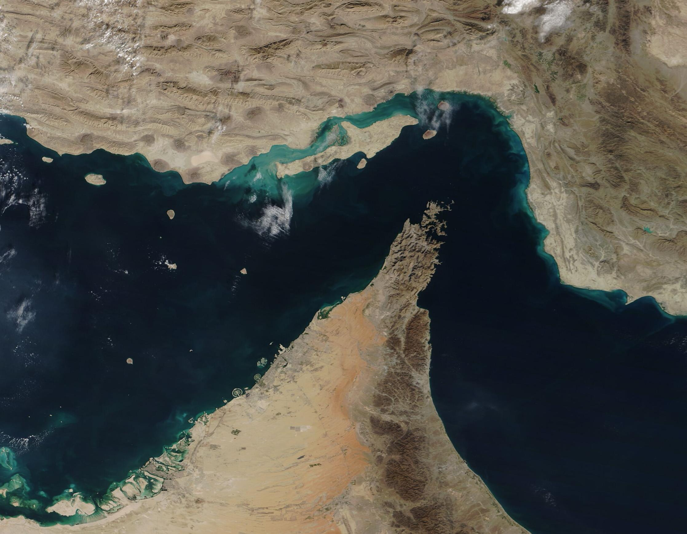
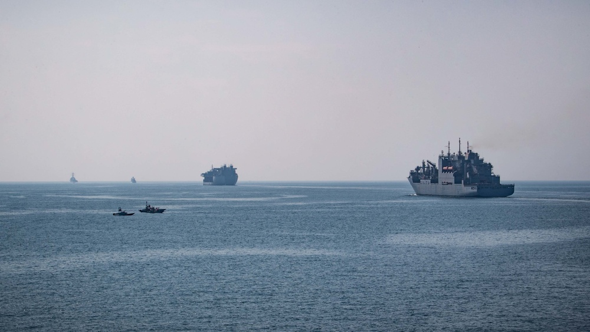

Bayangkan sebuah selat yang di titik tersempitnya hanya 39 kilometer — lebih pendek dari jarak Jakarta ke Bogor. Sekarang bayangkan: setiap hari, sekitar 21 juta barel minyak dipaksa lewat celah sempit itu. Tidak ada jalan lain. Inilah Selat Hormuz — leher botol energi dunia, dan salah satu titik paling rawan konflik di planet ini.

Geografi yang Mustahil: 2 Mil untuk 20% Minyak Dunia
Selat Hormuz menghubungkan Teluk Persia dengan Teluk Oman. Panjangnya sekitar 167 kilometer, tetapi di titik tersempit lebarnya hanya 21 mil laut (±39 km). Dan yang lebih gila: jalur pelayaran efektifnya — Traffic Separation Scheme — hanya 2 mil laut per arah, selebar jalan tol, dipisahkan buffer 2 mil di tengahnya.
Lewat "jalan tol" inilah mengalir sekitar 20,9 juta barel minyak per hari (data EIA, semester I-2025) — setara ±20% konsumsi minyak dunia dan ±20% perdagangan LNG dunia (mayoritas dari Qatar). Sekitar 130–140 kapal tanker melintas setiap hari. Dan 84% minyak mentah yang lewat sini tujuannya satu: Asia.
Fakta yang paling mengejutkan: tidak ada perairan internasional di selat ini. Iran dan Oman masing-masing mengklaim 12 mil laut wilayah teritorial — artinya setiap kapal tanker wajib melewati wilayah salah satu dari keduanya. Tidak ada koridor netral. Inilah kenapa satu pernyataan dari Teheran bisa langsung mengguncang pasar minyak global.
Kenapa Harganya Naik? Karena Tidak Ada Jalan Lain
Selat Hormuz adalah chokepoint: satu-satunya jalur laut keluar dari Teluk Persia. Rute alternatif lewat darat hampir tidak ada. Arab Saudi punya pipa East–West (Petroline) ke Laut Merah berkapasitas ±7 juta barel per hari, UEA punya pipa Habshan–Fujairah ±1,5 juta barel per hari. Total ±8,5 juta barel per hari — jauh di bawah ±21 juta barel arus normal.
Artinya: bila selat terganggu, mayoritas minyak Teluk tidak bisa dialihkan ke mana-mana. Pasar minyak pun bereaksi bukan pada kelangkaan fisik semata, melainkan pada ketakutan — premi asuransi kapal melonjak, spekulan masuk, dan harga meledak. Permintaan minyak bersifat inelastis: dalam jangka pendek, dunia tidak bisa begitu saja "tidak pakai minyak".
Sejarah Kelam: Tanker War 1984–1988
Ini bukan teori — selat ini sudah pernah jadi medan perang. Selama Perang Iran–Irak, kedua belah pihak menyerang kapal-kapal dagang di Teluk: Irak melancarkan 283 serangan, Iran 168 serangan. Periode ini dikenal sebagai Tanker War.
Amerika turun tangan dengan Operasi Earnest Will (Juli 1987) — mengawal tanker Kuwait, operasi konvoi laut terbesar AS sejak Perang Dunia II. Harganya mahal: pada Mei 1987 fregat USS Stark kena rudal Irak dan 37 pelaut AS tewas; April 1988 USS Samuel B. Roberts kena ranjau laut memicu Operasi Praying Mantis, pertempuran laut permukaan terbesar AS sejak WWII; dan pada 3 Juli 1988, USS Vincennes menembak jatuh Iran Air 655 — 290 penumpang dan awak tewas, tragedi yang membekas sampai hari ini.
Ancaman yang Terus Berulang
Pola ancaman penutupan selat menjadi senjata diplomatik Iran yang dipakai berulang-ulang:
2011–2012: Wakil Presiden Iran Mohammad Reza Rahimi mengancam menutup Hormuz bila sanksi minyak Barat diberlakukan (27 Desember 2011). Uni Eropa menjawab dengan embargo minyak (Januari 2012), AS menyatakan penutupan selat sebagai "garis merah".
2019: empat tanker diserang di lepas Fujairah (Mei), lalu Kokuka Courageous dan Front Altair diserang di Teluk Oman (Juni). AS menuduh Iran; Iran membantah.
2024: IRGC merebut kapal kontainer MSC Aries di dekat selat (April) — balasan atas serangan Israel ke konsulat Iran di Damaskus.
2025: parlemen Iran mendukung usulan menutup Selat Hormuz, sehari setelah serangan AS ke situs nuklir Iran (Juni). Langkah simbolis — keputusan final ada di Dewan Keamanan Nasional dan Khamenei — tetapi pasar sudah lebih dulu bereaksi.

Papan Catur Militer: Fifth Fleet vs IRGC
Di sekitar selat ini, dua kekuatan saling mengawasi setiap hari. Amerika menempatkan US Fifth Fleet yang bermarkas di Bahrain (diaktifkan ulang 1995) — armada yang tugasnya menjaga jalur pelayaran tetap terbuka. Di sisi lain, Iran menempatkan IRGC Navy dengan kapal-kapal cepat dan ranjau laut, plus posisi militer di pulau-pulau sengketa Abu Musa dan Greater/Lesser Tunb — direbut Iran pada 30 November 1971, dua hari sebelum UEA diproklamasikan, dan disengketakan sampai hari ini.
Selat Hormuz bukan sekadar jalur dagang. Ia adalah garis depan.
2 mil per arah. 20% minyak dunia. Tidak ada perairan internasional. Inilah definisi kamus dari kata "titik lemah".
Kenapa Indonesia Ikut Kena Getahnya?
Ini yang paling penting buat kita. Indonesia hari ini adalah net importir minyak: konsumsi BBM sekitar 1,6 juta barel per hari, produksi hanya ±600 ribu barel — sisanya, sekitar 1 juta barel per hari, diimpor.
Dan sebagian impor itu lewat Hormuz. Menurut Wakil Menteri ESDM, ±20% kebutuhan BBM Indonesia dipasok dari Arab Saudi melalui Selat Hormuz. Pada Oktober 2026, Dirjen Migas bahkan menyatakan Indonesia kehilangan ±25% sumber impor minyak mentahnya akibat konflik Iran–AS — Pertamina sampai harus "berburu" pasokan alternatif dari AS dan Afrika, sementara pemerintah mendorong biodiesel B50.
Rantai dampaknya jelas: gangguan di Hormuz → harga minyak dunia naik → biaya impor membengkak → tekanan ke APBN, inflasi, dan harga-harga di dalam negeri. Selat 39 kilometer di Timur Tengah bisa terasa sampai ke warteg.
Analisis: Dibaca Pakai Lensa Ketahanan Nasional
1. Ketergantungan tunggal = kerentanan yang bisa dipersenjatai. Pelajaran embargo 1973 terulang dalam bentuk baru: bukan lagi embargo politik, melainkan chokepoint geografis. Satu selat sempit mengendalikan seperlima minyak dunia — dan Indonesia mengimpor ±1 juta barel per hari. Setiap ketergantungan tunggal adalah titik tekan yang tinggal menunggu dimanfaatkan.
2. Diversifikasi pasokan + cadangan strategis — bukan reaktif, tapi sistem. Langkah "berburu" pasokan Pertamina saat krisis bersifat reaktif. Amerika menjawab 1973 dengan membangun Strategic Petroleum Reserve dan IEA — institusi permanen. Indonesia belum punya cadangan minyak strategis setingkat itu. Ketahanan energi butuh sistem, bukan pemadam kebakaran.
3. Diplomasi energi kolektif Asia. 84% minyak mentah Hormuz menuju Asia — Indonesia satu perahu dengan China, India, Jepang, dan Korea Selatan. Posisi tawar kolektif negara-negara konsumen Asia adalah instrumen ketahanan nasional yang belum dimaksimalkan. Dalam geopolitik energi, pembeli yang bersatu bukan sekadar konsumen — ia adalah kekuatan.
Cermin: Kita Juga Punya "Hormuz" Sendiri
Ironisnya, Indonesia juga memegang salah satu chokepoint terpenting dunia: Selat Malaka — jalur sekitar sepertiga perdagangan dunia dan separuh minyak yang menuju Asia Timur. Kalau Hormuz adalah titik lemah dunia, Malaka adalah kartu truf Indonesia.
Pertanyaannya: sudahkah kita memainkan kartu itu dengan strategi sebesar nilai yang ia kandung? Itulah bedanya negara yang punya aset strategis dengan negara yang punya kesadaran strategis. Jejak kuasa — selalu soal siapa sadar akan kuasa yang ia pegang.
Arsip & Referensi
Angka dan peristiwa di artikel ini diverifikasi silang dari sumber-sumber berikut:
- U.S. Energy Information Administration (EIA) — data volume Hormuz (±20,9 juta bpd, S1-2025).
- NASA Earth Observatory — "A Bloom in the Strait of Hormuz" (koroborasi ±20 juta bpd/hari).
- Wikipedia — "Strait of Hormuz", "2011–12 Strait of Hormuz dispute", "June 2019 Gulf of Oman incident", "US Fifth Fleet", "Greater and Lesser Tunbs" (geografi & linimasa, diverifikasi silang).
- Reuters — factbox serangan tanker 2019 (Kokuka Courageous, Front Altair).
- Investor.id — pernyataan Menteri ESDM Bahlil (12 Okt 2026): konsumsi, lifting, impor ±1 juta bpd.
- Liputan6 / Bloomberg Technoz — pernyataan Wamen ESDM (±20% BBM dari Saudi via Hormuz) dan Dirjen Migas Laode Sulaeman (±25% sumber impor hilang, 5 Okt 2026).
- Strauss Center — lebar selat & Traffic Separation Scheme (2 mil per arah).
Kredit foto arsip: citra satelit — NASA/MODIS, public domain; konvoi AL AS — U.S. Navy, public domain.
Catatan redaksi: detail operasi militer 2026 di kawasan (di luar yang tercantum) belum masuk verifikasi 2–3 sumber untuk artikel ini, sehingga tidak dijadikan klaim.
Suka bedah kayak gini? Versi ringkasnya ada di Instagram & TikTok @jejakkuasa — follow biar nggak ketinggalan titik balik berikutnya.
Next: Operasi Ajax 1953 — ketika CIA & Inggris mengkudeta perdana menteri Iran gara-gara minyak dinasionalisasi.